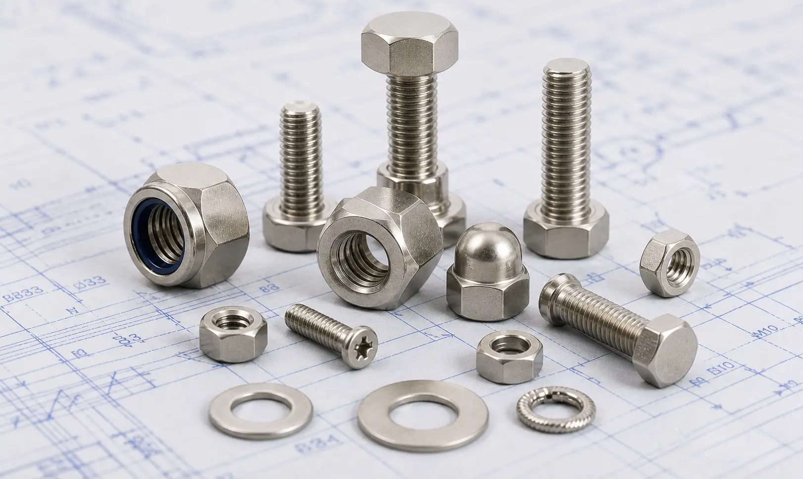

Gururaj Infradesigns supplies Nickel Alloy Fasteners in Inconel, Monel, Hastelloy, Nickel, and Titanium grades for marine, offshore, chemical processing, power generation, aerospace, and industrial fastening applications.
Gururaj Infradesigns is a trusted Nickel Alloy Fasteners Manufacturer in India, supplying high-performance fastening solutions for industries operating in corrosive, high-temperature, and high-pressure environments. Manufactured using premium nickel alloy materials, these fasteners offer exceptional resistance to oxidation, chemical attack, seawater corrosion, and extreme service conditions where conventional stainless steel fasteners may not perform effectively.
As a leading Nickel Alloy Fasteners Supplier in India, we offer a comprehensive range of hex bolts, stud bolts, anchor bolts, U bolts, hex nuts, washers, and socket head bolts in various nickel alloy grades. These fasteners are widely used in chemical processing plants, offshore platforms, marine equipment, power generation facilities, aerospace systems, and petrochemical industries requiring superior durability and long service life.

Nickel Alloy Fasteners are specialized fastening components engineered for applications involving aggressive chemicals, elevated temperatures, high mechanical stress, and corrosive operating environments. Their superior metallurgical properties provide excellent strength, corrosion resistance, creep resistance, and oxidation resistance, making them suitable for critical industrial installations.
At Gururaj Infradesigns, we supply nickel alloy fasteners in multiple grades, dimensions, and configurations to meet diverse industrial requirements. These fasteners are designed to ensure secure and reliable assemblies while maintaining performance under demanding operating conditions.
| Parameter | Details |
|---|---|
| Product Name | Nickel Alloy Fasteners |
| Product Types | Hex Bolts, Stud Bolts, Anchor Bolts, U Bolts, Hex Nuts, Washers, Socket Head Bolts |
| Material Grades | Inconel 600, 601, 625, 718, 800, 800H, 800HT, 825, Monel 400, Monel K500, Hastelloy C22, Hastelloy C276, Hastelloy B2, Nickel 200, Nickel 201, Titanium Grade 2, Titanium Grade 5 |
| Standards | ASTM, ASME, DIN, ISO |
| Thread Type | Metric, UNC, UNF, BSW |
| Size Range | M3 to M100 & Custom Sizes |
| Manufacturing Process | Hot Forged, Cold Forged, CNC Machined |
| Surface Finish | Plain, Polished, Passivated |
| Certification | Material Test Certificates Available |
| Fastener Type | Primary Use | Common Industries |
|---|---|---|
| Hex Bolts | Heavy-duty fastening for structural assemblies and equipment installations. | Petrochemical, Power, Engineering |
| Stud Bolts | Used in flanged joints and pressure systems requiring secure sealing. | Oil & Gas, Refineries |
| Hex Nuts | Provide reliable threaded connections in industrial assemblies. | Manufacturing, Process Industries |
| Washers | Help distribute loads and improve fastening stability. | Engineering, Chemical Plants |
| U Bolts | Used for pipe support and clamping applications. | Piping, Marine, Infrastructure |
| Anchor Bolts | Secure equipment and structures to foundations. | Construction, Industrial Projects |
| Socket Head Bolts | Preferred where high strength and compact installation are required. | Machinery, Aerospace, Automation |
Nickel alloy fasteners are available in a variety of configurations to support critical industrial applications operating under challenging service conditions. Choosing the correct fastener type improves assembly reliability, safety, and long-term operational performance.
At Gururaj Infradesigns, we offer fastening solutions suitable for high-temperature, corrosive, and high-pressure environments where material performance is essential for maintaining operational integrity.
Inconel grades such as 600, 601, 625, 718, 800, 800H, 800HT, and 825 are widely used for high-temperature and corrosion-resistant fastening applications. These fasteners provide excellent resistance to oxidation, thermal fatigue, and aggressive chemical environments, making them suitable for power plants, heat treatment facilities, and petrochemical industries.
Monel alloys are known for their outstanding resistance to seawater, acids, and alkaline environments. Customers looking for Monel 400 Fasteners Manufacturers often select this grade for marine and chemical processing applications. For applications requiring higher strength along with corrosion resistance, Monel K500 Fasteners Manufacturers in India provide an excellent solution for offshore and industrial environments.
Hastelloy fasteners are designed for some of the most demanding chemical processing applications. Industries seeking Hastelloy C22 Fasteners rely on this grade for exceptional resistance to oxidizing and reducing chemicals. Similarly, Hastelloy C276 Fasteners Manufacturers are widely used in pollution control systems, chemical plants, and severe corrosive environments requiring long-term reliability.
Nickel 200 and Nickel 201 fasteners offer excellent resistance to caustic environments, alkaline solutions, and various reducing chemicals. Businesses sourcing Nickel 200 Fasteners often use these fasteners in food processing, electronics, chemical handling, and specialized industrial equipment requiring high-purity nickel materials.
Titanium Grade 2 and Titanium Grade 5 fasteners combine exceptional strength with lightweight properties and excellent corrosion resistance. These fasteners are commonly used in aerospace, marine engineering, medical equipment, and advanced industrial applications where weight reduction and durability are important considerations.
| Grade | Key Advantage | Typical Applications |
|---|---|---|
| Inconel 625 | High corrosion and heat resistance | Offshore & Petrochemical |
| Inconel 718 | High strength at elevated temperatures | Aerospace & Turbines |
| Monel 400 | Excellent seawater resistance | Marine Applications |
| Monel K500 | Higher strength with corrosion resistance | Offshore Equipment |
| Hastelloy C22 | Outstanding chemical resistance | Chemical Processing |
| Hastelloy C276 | Severe corrosion environments | Pollution Control Systems |
| Nickel 200 | High purity nickel composition | Chemical & Electrical Applications |
| Titanium Grade 5 | High strength-to-weight ratio | Aerospace & Engineering |
Nickel alloy fasteners play a vital role in upstream, midstream, and downstream operations where exposure to high pressure, corrosive media, and extreme operating conditions is common. Their reliability helps maintain the safety and integrity of critical systems.
Processing facilities handling acids, solvents, and aggressive chemicals rely on nickel alloy fasteners for their superior corrosion resistance and long service life. These fasteners help reduce maintenance requirements and downtime.
Nickel alloy fasteners are widely used in offshore platforms, marine equipment, desalination systems, and shipbuilding projects where continuous exposure to seawater demands exceptional corrosion resistance.
Power plants utilize nickel alloy fasteners in boilers, turbines, heat exchangers, and high-temperature systems that require materials capable of maintaining strength and performance under thermal stress.
Advanced nickel alloy and titanium fasteners are selected for aerospace and defence applications where weight reduction, mechanical strength, and resistance to extreme operating conditions are essential.
Gururaj Infradesigns is a trusted Nickel Alloy Fasteners Stockist in India, maintaining a ready inventory of industrial fasteners in various nickel alloy grades, sizes, and specifications to support urgent project requirements. Our stock includes bolts, nuts, stud bolts, washers, anchor bolts, and other fastening solutions designed for demanding industrial environments.
As a reliable Nickel Alloy Fasteners Supplier in India, we serve customers across chemical processing, marine, oil & gas, power generation, and engineering sectors with consistent product quality and dependable delivery schedules. Our focus remains on supplying fastening solutions that meet the performance requirements of critical industrial applications.
At Gururaj Infradesigns, quality is an integral part of our manufacturing and supply process. Our nickel alloy fasteners are produced using quality-tested materials and are inspected for dimensional accuracy, thread quality, and overall performance to ensure dependable service in demanding industrial applications.
As an ISO Certified Company, we are committed to maintaining consistent quality standards and delivering reliable fastening solutions that meet the expectations of diverse industries.
Selecting the right fasteners is essential for ensuring the safety, reliability, and longevity of industrial systems. Gururaj Infradesigns offers a wide range of nickel alloy fastening products designed to meet diverse application requirements across chemical processing, marine engineering, oil & gas, power generation, and advanced manufacturing sectors. Our commitment to quality, dependable supply, and customer satisfaction helps businesses source fastening solutions with confidence while ensuring long-term performance in challenging operating environments.